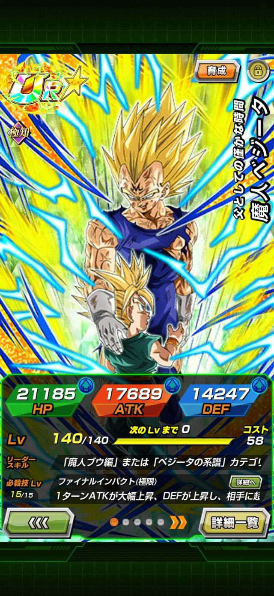
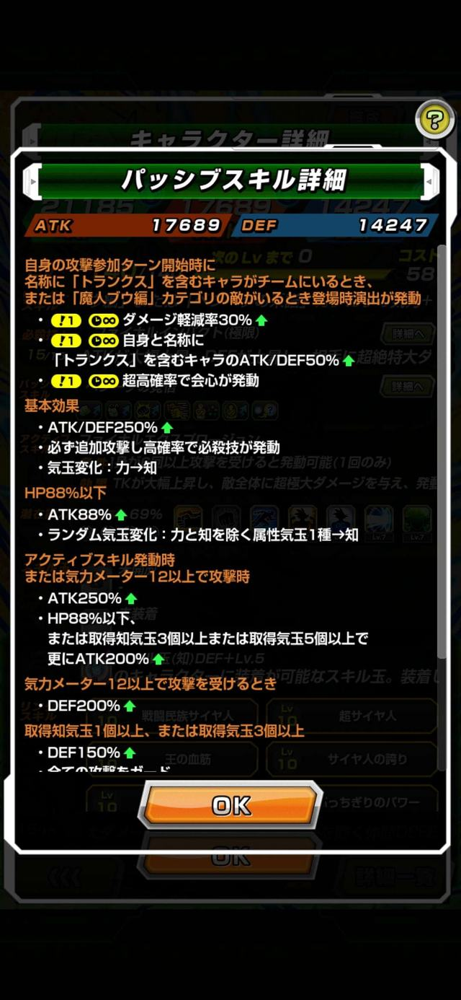
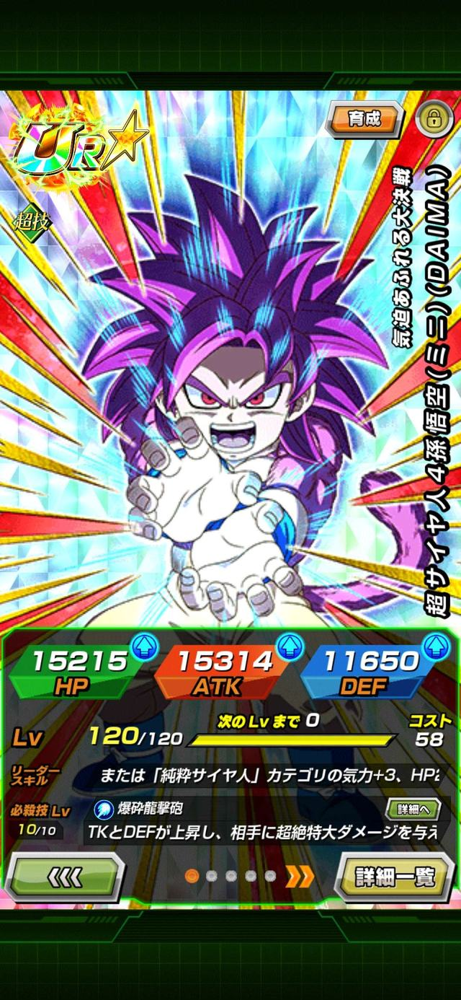
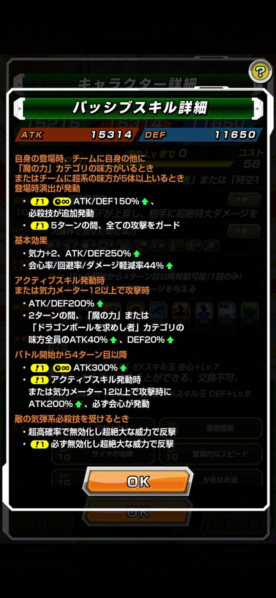

Dokkan Battle
I built something that reads JP Dokkan cards and shows you what they do in English. The interesting part is that it never translates a single word.
A new card lands on JP. You pull it, you open the details, and you are looking at a wall of Japanese. Somewhere in there it says how much ATK it actually gets, whether that lasts one turn or the whole fight, and whether the part that sounds incredible only works when the enemy is above 50% HP.
You can guess. Guessing is how people end up building a rotation around a card that does not do what they thought it did.




The obvious fix is a translator. Point something at the text, get English back.
In practice that goes badly. Dokkan's wording is formal, repetitive and extremely specific, and the numbers matter far more than the sentence wrapped around them. A translator that turns "raises ATK by 150% for 3 turns" into "greatly increases attack for a while" has technically done its job and practically ruined it.
The bigger problem is that machine translation is confidently wrong. It does not flag the parts it guessed at. For a game where a single number decides whether a card is worth building around, a translation you cannot trust is worse than no translation.
Here is what makes that possible.
The community already translated every card. By hand, carefully, over years. When a card reaches the Global version it gets an official English kit, and because JP and Global now release the same cards on the same schedule, that English version almost always already exists by the time you are looking at the card.
The translation problem was solved a long time ago, by players. What was never solved is a much smaller question:
Which one of five thousand cards am I looking at right now?
Answer that, and the English is just a lookup.
A small bubble floats on top of the game. When you hit a card you cannot read, you tap it. The bubble glances at the screen, works out which card that is, and slides up a panel with the English version: leader skill, passive, super attack, links and categories.
Tap, read, close. That is the whole thing.
Underneath it is an Android overlay window sitting above the game, MediaProjection mirroring the screen so a tap can grab the current frame, and ML Kit's Japanese text recognition running on the phone with the model bundled into the app. Nothing is sent anywhere.
That middle part is where the platform decided the design. On Android 14 and up a screen-capture grant is single use: the consent can be exchanged once, and creating a second capture from the same grant throws. So a capture-per-tap app would put a system permission dialog in front of you on every single tap. Instead the app takes the permission once when the bubble starts and leaves the screen mirrored for the session, and a tap just takes the newest frame. One dialog, unlimited reads, at the cost of mirroring while it runs.
Matching needs something to match against: the Japanese text of every card, keyed to an ID. There is no API for that. What there is, it turns out, is a community card database whose pages carry the entire card record as JSON embedded in the HTML, so a scraper can read it straight out rather than pretending to be a browser.
The notes I started from said that source was unscrapable, that the site rendered everything in the browser and served an empty shell. That note was two years old and wrong. A single HTTP request disproved it, and took with it the entire case for scraping a wiki instead, or pulling apart the game's own database. Checking it was the highest-value ten minutes in the project.
Collecting it was not the hard part. Reconciling it was. An SSR that awakens to UR and then to LR is three separate cards with three different kits, so the index has to hold all three and the app has to match whichever one you are actually holding. An Extreme Z-Awakening does not mint a new card, it adds a second kit to an ID that already exists, so both versions have to sit in the index at once. And a transformed form does not serve its own abilities on its own page at all. That data only exists behind an undocumented endpoint, which turned up by reading the site's own JavaScript to see what its transformation arrows were calling.
That last one was not only a display problem. The index had been storing the base card's Japanese text for 117 transformed forms, so a screenshot of a transformed card could never match correctly. There was nothing correct in the index for it to match against. Fixing what the app showed also fixed what it was searching.
Reading text off a screen is never clean. Characters get dropped. Numbers sitting next to icons get mangled. And Dokkan makes it harder than most games, because there are well over a hundred cards called Super Saiyan Goku, and plenty of them share entire sentences of ability text with each other.
So the app does not go looking for one perfect match. It holds a vote.
The index holds around 38,700 separate pieces of text: every passive line, every super attack name, every leader skill, across all 5,177 cards. Each line the recogniser manages to read is scored against them, and anything clearing a similarity threshold votes for that card, weighted by how long the line is.
The scoring is deliberately forgiving about the specific way OCR fails here. It measures the longest run of characters two strings share in order, rather than demanding they line up position by position, because the usual damage is dropped or swapped characters rather than scrambled ones. A digit misread next to an icon costs almost nothing.
One fix came out of a measurement rather than a hunch. The in-game card page truncates the leader skill to a single cut-off line, and comparing that fragment against the full index entry scored below the threshold, so the best evidence on the screen was contributing nothing at all. It was invisible to the matcher on about 7% of cards.
The textbook fix, meanwhile, failed. Down-weighting text that many cards share is the standard answer to a character name appearing on 105 different cards. It was implemented twice and made accuracy worse on every measurement, because damping the real signal leaves interface noise that happens to match something rare comparatively louder. It is written into the source as a dead end so that nobody, me included, tries it again.
It works the way you recognise a song from a few half-remembered lyrics. No single line proves anything. Enough of them pointing the same direction does.
Some screenshots genuinely cannot identify a card. If the only readable thing is the character's name, then a hundred cards match equally well, and no amount of cleverness recovers the right one, because the information needed simply is not on the screen.
The app checks for this by counting how many candidates sit within 2% of the top score. The separation is cleaner than I expected: a healthy card page usually has 2 candidates in that band, while a name-only screenshot has around 7. At three or more it stops, tells you the screenshot was ambiguous, widens the list of alternatives it offers, and points you at the screen that does work, instead of presenting a guess as though it were an answer.
Being willing to say "I am not sure" turned out to be one of the more useful things it does.
Everything the app needs is already inside it. All 5,177 cards and all 5,159 English kits are packed into the app itself, about half a megabyte compressed. It does not need a connection to answer a question.
The kits are stored as one long run of JSON objects with a byte offset recorded per card, rather than as a single document. The app only ever wants one kit at a time, and parsing the whole thing would cost seconds and a good deal of memory inside a background service, so instead it seeks to the offset and reads about two kilobytes.
That was partly a courtesy. An earlier version looked each card up from a fan-run Dokkan site as you used it, pulling a 211KB page every time to show you those same two kilobytes. That is fine when one person does it and rude when a whole community does. Now it is gathered once, ahead of time, and the site gets left alone.
Which is the obvious problem with packing everything into the app: a card that comes out next week is not in a build I made last month.
That is handled by a pipeline rather than by me remembering. A scheduled job runs every week, pulls the live card list and compares it against the index already committed to the repository. It fetches only what is genuinely missing, which after a banner is usually five to twenty cards rather than the eleven thousand a full re-scrape would hit. It checks the result, refuses to commit an index smaller than the one already there, and pushes the update back. The app looks for a newer index when it starts and pulls it down.
New banner, no app update, no work from me.
Releases work the same way. Tagging a version builds and signs the APK and attaches it to a release, which is why it installs from a phone's browser with no computer involved. The signing part matters more than it sounds: a fresh build machine invents a new key every run, and Android will not install a build over one signed with a different key, so without a stored key every update would mean uninstalling first.
A card had just been Extreme Z-Awakened. On its base form, the app showed the new kit correctly. On its transformed form, it kept showing the old one.
The cause was not really in the app. The card list it builds from records an awakening date on the base card only. Every transformed form is listed with no date at all, even though the awakening upgrades every form of the card. So the app looked at the transformed form, saw that nothing had changed, and carried on using the copy it had saved from before the awakening happened.
Nothing inside the app could have caught it. The saved information was complete and perfectly consistent with itself. It was just describing a card that no longer existed. The only thing that knew it was wrong was the game, and a player who noticed.